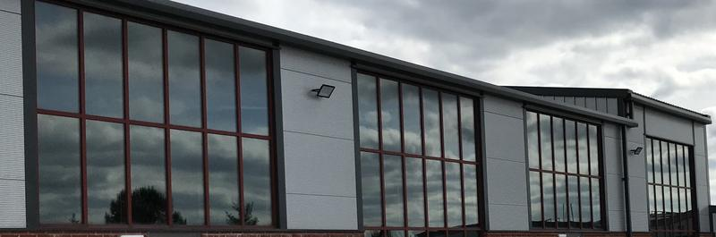
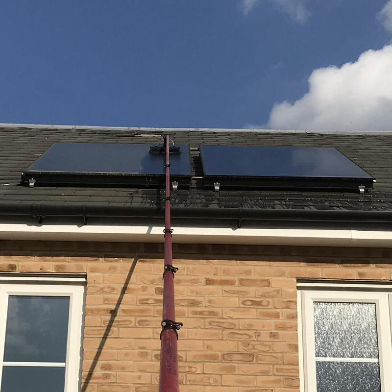
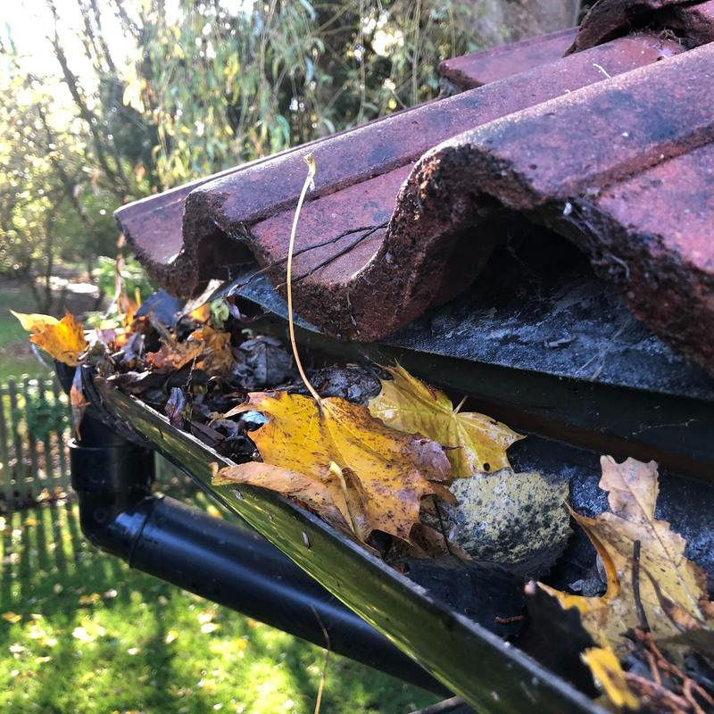
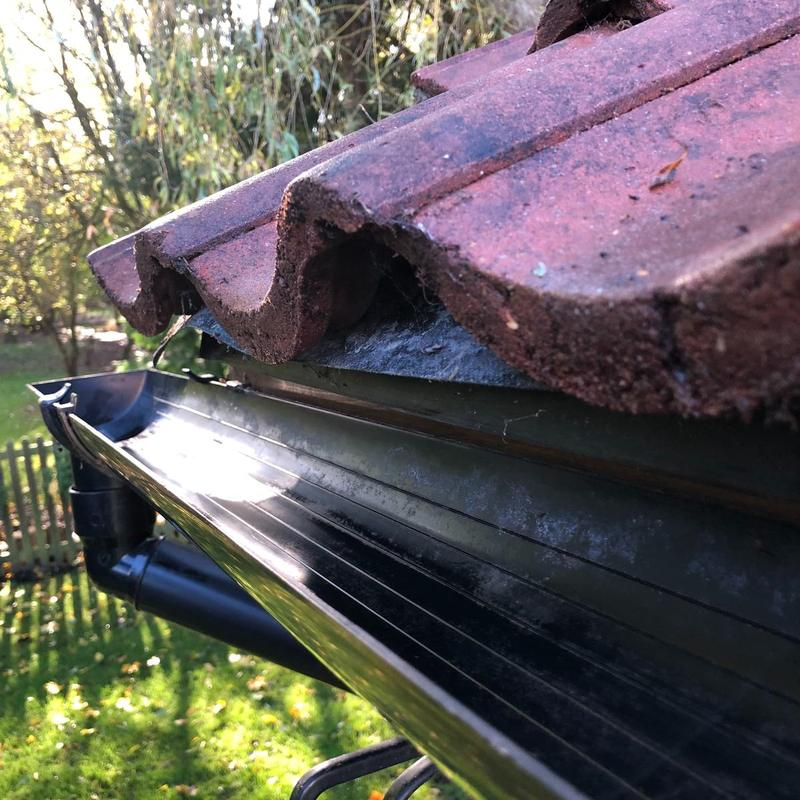

Commercial & domestic window cleaning
Clear glass for every building you look after.
Window cleaning for superstores, warehouses, offices, new builds and landlords across Norfolk, from our base in Watton. Homes, gutters and solar panels too.
5.0 from 50+ Google reviews. Fully insured, with free quotes and no obligation.
Watton · Thetford · Swaffham · Attleborough · Hingham · Great Hockham and the surrounding villages

- 5.0 on Googlefrom 50+ reviews
- Fully insuredfull public liability cover
- 3 storeys and abovehigh-level glazing from the ground
- 10+ yearsin the trade
Who we work for
From superstores, warehouses and offices to new builds, shop fronts and whole rental portfolios, KAT Window Cleaning keeps your buildings looking their best on a schedule that suits you.
Superstores & retail parks
Large glazed frontages and entrances kept spotless on a regular schedule.
Warehouses & industrial units
Offices, entrances and high-level glazing, including buildings of 3 storeys and above.
Offices & business parks
Clean windows that give staff and visitors the right first impression.
New builds & developers
Window cleans for new homes before handover, from single bespoke houses to whole developments.
Landlords & housing providers
Letting agents, landlords and organisations that look after many homes, all on one regular schedule.
Shops, schools & community buildings
Shop fronts, schools, charities and community premises kept clean and welcoming.
What we clean
Most clients start with their windows and add the rest when it needs doing. Tick anything you’d like priced and it goes straight onto your quote.
-
Commercial window cleaning
Superstores, warehouses, offices, new builds, shops and landlords, on a weekly, monthly or two-monthly schedule. Buildings of 3 storeys and above, fully insured.
Find out more -
Windows for homes
Regular monthly cleans, or a one-off. Glass, frames and sills cleaned every visit, with a reminder the day before.
Find out more -
Gutter clearance From £50
Every gutter inspected and cleaned out by hand, with photos on request. Gutters emptied from £50.
Find out more -
Solar panel cleaning
Dirt, lichen and bird mess removed safely from the ground with specialist equipment.
Find out more
Set up for commercial sites
Big glazed frontages, high windows and lots of buildings on one schedule. We clean from the ground with water-fed poles, book visits weekly, monthly, every 2 months or one-off, and send electronic invoices, with online and cash payments accepted.
- 3 storeys and above
- High-level glazing is reached from the ground with a water-fed pole, so upper floors are done without ladders against the building.
- Fully insured
- KAT Window Cleaning carries full public liability insurance on every job.
- Frames and sills too
- Frames and sills are cleaned on every visit, not just the glass, so the whole frontage looks cared for.

Our work
Real jobs by Andrew around Watton and Thetford, from commercial glazing to tall windows, solar panels and gutters.
Commercial glazing on a regular schedule 
Tall windows, cleaned from the ground 
Frames and sills every visit 
Solar panels, cleaned from the ground 
Gutter before clearing… 
…and after, cleared by hand


Rated 5.0 by 50+ customers
From developers and landlords to homeowners. Every review is on Google.
KAT Window Cleaning, recently carried out some work for us on a large bespoke house project for Clayland estates, Andrew was a true professional, and worked cleanly and efficiently. I would happily recommend KAT Window Cleaning to anyone
After a long overdue roof cleaning job completed our attention turned to the windows. Andrew from KAT cleaning spent the day at our property in miserable wet weather, clearing all our gutters of years worth of growth. All windows,,fascias cleaned, guttering and downpipes. A top job was also done on our conservatory, again clearing years worth of growth and build up. All in all a very thorough job has been done by Andrew, a very friendly and professional man. I would highly recommend using KAT window cleaning service. You won’t be disappointed.
Paul B., Google review
We’ve recently been let down by a couple of local window cleaners but Andrew has restored our faith in the profession. Andrew has got great customer facing skills, he is reliable, professional, pays attention to detail and most importantly good at his job! He comes highly recommended.
Ian H., Google review
Andrew was friendly and professional. He communicated promptly and completed the cleaning of our solar panels efficiently. I would recommend his services.
Edward S., Google review
How it works
From your first message to clean glass on a schedule, in four stops.
-
Ask for a quote
Fill in the form or give Andrew a call. Tell us about the building, or homes, and what you need cleaned.
-
Get your price
We can arrange a free site visit, or simply quote from photos. No obligation either way.
-
Book in
Choose how often: weekly, monthly, every 2 months or a one-off. We book a date that suits you and the site.
-
Stay informed
You'll get a reminder the day before each clean and a message when it's done, with electronic invoicing for businesses.
or call 07932 008040
Where we work
Based in Watton and covering the towns and villages around it, from Swaffham down to Thetford. Nearby but not on the list? Ask anyway and we’ll let you know.
- Watton
- Thetford
- Swaffham
- Attleborough
- Hingham
- Great Hockham
Questions people ask
Anything else, just ask. A quick call is usually the fastest way.
All questions and answersCan you clean buildings over 3 storeys?
Yes. KAT Window Cleaning handles all manner of commercial work, including buildings of 3 storeys and above. Get in touch with the details and we will advise.
Are you insured?
Yes, KAT Window Cleaning carries full public liability insurance.
How often should I have my windows cleaned?
Most homes have their windows cleaned monthly. One-off cleans are available too, just let us know what suits you.
How much does gutter clearance cost?
Gutters are emptied from £50. The final price depends on the size of the property and the length of guttering, and we always confirm it before we start.
Get a free quote
Tell us a little about the building, or your home, and what you’d like cleaned. Andrew will get back to you with a price, from photos or a free site visit. There’s no obligation.
Thanks. Your request is in.
Andrew will be in touch soon with a price.
If it’s urgent, call 07932 008040.